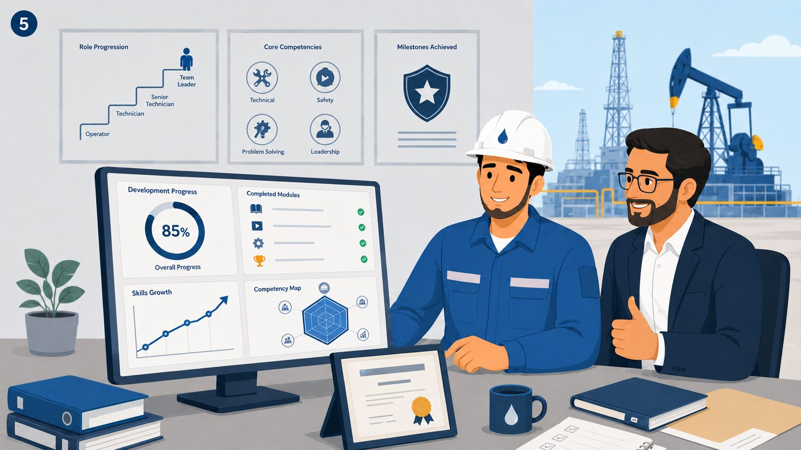

Mohammed's Development Journey
From new joiner confusion to field readiness — how Learning Hub supports every stage of employee growth.
Mohammed joins as a new field engineer — surrounded by manuals, procedures, and technical documents, with no clear starting point.
Learning Hub generates a role-based development plan from his JD and competency model — giving Mohammed a clear, structured path forward.
He completes bilingual courses, watches live training sessions, and checks off tasks — all tracked automatically in the system.
Mohammed applies his learning on-site, working alongside experienced engineers. Practical exposure and collaboration reinforce classroom knowledge.

His manager reviews progress data, completed modules, and skills growth. Development actions are refined based on real learning signals and feedback.
Mohammed reaches role readiness — contributing confidently in the field, mentoring new joiners, and continuing his development cycle.
Initial Development Plan
Mohammed begins with a role-based development plan generated from the target role's JD, competence model, and operational standards.
Learning Activity & Results
He completes onboarding tasks, technical courses, assessments, and live training sessions. The system captures progress, quiz results, and behavior.
Manager Feedback Added
His manager adds feedback on practical gaps, safety priorities, field readiness, and areas that need more hands-on support.
Updated Development Actions
Learning Hub refines his next learning actions, helping him close the specific skill gaps and move toward role readiness.
A standard role-based development plan — useful starting point, but not yet informed by real learning signals.
More targeted development actions based on actual learning results, behavior, and manager feedback — focused on competency gap closure.
+ JD + Competence Model
Development Plan
+ Results
Feedback
Development Actions
Readiness